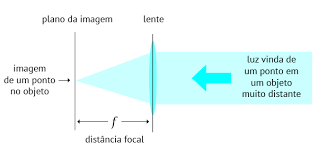

O transistor é um tipo de dispositivo semicondutor utilizado para amplificar ou atenuar a intensidade da corrente elétrica em circuitos eletrônicos.
Resumidamente, é possível trabalhar de diversas maneiras dependendo da configuração adotada.Eles são compostos por três camadas de material semicondutor, geralmente silício ou germânio, e são amplamente utilizados na construção de circuitos eletrônicos.
Os três tipos básicos de transistores são os transistores de junção bipolar (BJT), os transistores de efeito de campo de junção (JFET) e os transistores de efeito de campo de metal-óxido-semicondutor (MOSFET).Segue na imagem abaixo, exemplos dos transistores mais utilizados em circuitos eletrônicos:

Desafios do contexto
A identificação de features de componentes usando visão de máquina é uma área de aplicação comum em diversos setores industriais, como manufatura, automação e controle de qualidade. Essa técnica envolve o uso de algoritmos de processamento de imagem para extrair características específicas de componentes ou objetos, a fim de identificá-los, classificá-los ou inspecioná-los. No entanto, existem alguns desafios técnicos que precisam ser considerados ao lidar com a identificação de features usando visão de máquina. Alguns desses desafios incluem a iluminação, o jitter no processamento e as especificações da câmera, como distância focal, casamento com o tipo de lente e sincronismo com strobbing.
Desafios de iluminação: A iluminação inadequada pode afetar significativamente a qualidade das imagens adquiridas e, consequentemente, a capacidade de identificar as features corretamente. Variações na intensidade da luz, sombras, reflexos e iluminação não uniforme podem dificultar a detecção precisa das características do componente. Para superar esses desafios, técnicas de iluminação controlada, como iluminação direcional, difusa ou em ângulo, podem ser usadas para melhorar o contraste e realçar as características relevantes.
Desafios de jitter no processamento: O jitter é uma forma de ruído que pode ocorrer durante a aquisição de imagens ou no processamento subsequente. Pode ser causado por vibrações mecânicas, instabilidade na montagem do sistema ou movimentos indesejados dos objetos sendo inspecionados. O jitter pode afetar negativamente a precisão da identificação das features, levando a resultados inconsistentes. É importante minimizar o jitter usando técnicas como estabilização de imagens ou ajuste dos algoritmos de processamento para lidar com movimentos indesejados.
Especificações da câmera: As especificações da câmera desempenham um papel crucial na identificação de features usando visão de máquina. A distância focal da câmera determina a área de visualização e a resolução espacial disponível. É necessário selecionar a distância focal adequada com base no tamanho e na complexidade das features a serem identificadas. Além disso, o tipo de lente escolhido deve ser adequado para o objetivo da aplicação, levando em consideração a profundidade de campo e outras características ópticas relevantes.
O sincronismo com strobbing é uma técnica usada para controlar o tempo de exposição da câmera com a iluminação. Ela envolve a coordenação precisa entre a câmera e a fonte de iluminação, a fim de obter imagens nítidas e livres de borrões. O strobbing permite congelar o movimento do objeto durante a exposição, o que é especialmente útil ao lidar com objetos em movimento rápido. Isso ajuda a capturar imagens nítidas das features do componente, melhorando a precisão da identificação.
Em resumo, a identificação de features de componentes usando visão de máquina é uma técnica valiosa para várias aplicações industriais. No entanto, é importante enfrentar desafios como a iluminação adequada, jitter no processamento e especificações da câmera para garantir resultados precisos e confiáveis. Esses desafios podem ser superados por meio do uso de técnicas apropriadas de iluminação, estabilização de imagem e seleção cuidadosa das especificações da câmera, incluindo a distância focal, o casamento com o tipo de lente e o sincronismo com strobbing.
Jitter
No contexto do processamento de imagem, o jitter refere-se a variações indesejadas no posicionamento ou na estabilidade dos objetos ou da câmera durante a aquisição de imagens. Essas variações podem afetar negativamente a qualidade das imagens capturadas e dificultar o processamento subsequente. O jitter pode ser causado por vários fatores, como movimentos involuntários da câmera, trepidações mecânicas, vibrações ambientais ou instabilidade na fixação dos objetos.
O jitter no processamento de imagem pode ter os seguintes efeitos prejudiciais:
Degradação da nitidez: O jitter pode resultar em imagens borradas ou desfocadas, prejudicando a clareza e a definição dos detalhes. Movimentos ou vibrações durante a aquisição da imagem podem levar a sobreposição de pixels adjacentes, causando uma aparência embaçada.
Dificuldade na extração de características: O jitter pode interferir na detecção e extração precisa das características desejadas na imagem. Algoritmos de processamento de imagem, como detecção de bordas, segmentação ou reconhecimento de padrões, podem ser impactados negativamente pelo jitter, resultando em resultados imprecisos ou inconsistentes.
Problemas de registro e alinhamento: O jitter pode causar desalinhamento entre imagens ou frames consecutivos, dificultando a fusão ou o alinhamento adequado. Isso pode ser problemático em aplicações que envolvem registro de imagens, como em técnicas de imagem estereoscópica ou composição panorâmica.
Distorção da geometria: O jitter pode introduzir distorções na geometria da imagem, especialmente quando ocorre movimento da câmera. Isso pode afetar a precisão das medições ou o dimensionamento correto dos objetos na imagem.
Para mitigar os efeitos do jitter no processamento de imagem, podem ser adotadas algumas medidas:
Estabilização da câmera: Utilização de técnicas de estabilização, como tripés, sistemas de estabilização óptica ou eletrônica de imagem (OIS/EIS) ou montagens mecânicas que reduzem a trepidação da câmera.
Aquisição de imagens rápidas: A utilização de tempos de exposição curtos ou captura de imagens em alta velocidade pode minimizar o impacto do jitter, reduzindo a probabilidade de movimentos indesejados afetarem a imagem.
Pós-processamento de estabilização: Algoritmos de pós-processamento podem ser aplicados para compensar o jitter e melhorar a nitidez das imagens. Esses algoritmos podem corrigir deslocamentos e desvios nas imagens, aumentando a clareza e a qualidade das mesmas.
Em resumo, o jitter no processamento de imagem pode prejudicar a qualidade das imagens capturadas, dificultar a extração de características e introduzir distorções indesejadas. É importante adotar medidas para minimizar o jitter, como estabilização da câmera, aquisição rápida de imagens e aplicação de algoritmos de pós-processamento para compensação. Isso ajuda a garantir imagens de melhor qualidade e resultados mais precisos nas aplicações de processamento de imagem.
Exemplo Jitter no sinal
Iluminação
No contexto de visão de máquina, a iluminação desempenha um papel crucial na aquisição e no processamento de imagens. Uma iluminação adequada é essencial para obter imagens de alta qualidade e garantir a precisão das técnicas de visão de máquina, como detecção de objetos, reconhecimento de padrões, segmentação e medições.A seguir, estão alguns aspectos importantes da iluminação no contexto da visão de máquina:
Contraste: A iluminação adequada ajuda a melhorar o contraste entre os objetos e o fundo na imagem. Um bom contraste é essencial para destacar as características dos objetos e facilitar sua detecção e segmentação. Uma iluminação inadequada pode resultar em baixo contraste, dificultando a extração precisa das informações relevantes.
Uniformidade: A iluminação uniforme é importante para evitar variações indesejadas no brilho ou na intensidade da luz na imagem. Variações na iluminação podem levar a problemas de detecção e classificação de objetos, pois podem introduzir artefatos ou distorções nas imagens capturadas.
Eliminação de sombras: Sombras podem causar problemas significativos na visão de máquina, pois podem alterar a aparência dos objetos e dificultar sua detecção e segmentação corretas. Uma iluminação adequada deve ser projetada para minimizar ou eliminar as sombras, garantindo uma representação mais precisa dos objetos na imagem.
Redução de reflexos: Reflexos em superfícies brilhantes podem distorcer a aparência dos objetos e prejudicar a extração correta de características. A iluminação deve ser projetada de forma a reduzir reflexos indesejados, seja por meio de técnicas de iluminação direcional, difusa ou ângulos de incidência adequados.
Adaptação à aplicação: A iluminação deve ser ajustada de acordo com a aplicação específica de visão de máquina. Por exemplo, em aplicações de inspeção de qualidade, a iluminação pode ser projetada para destacar defeitos ou características específicas. Em outras aplicações, como reconhecimento de objetos, a iluminação pode ser otimizada para realçar características distintas dos objetos.
Controle e sincronização: Em algumas situações, o controle preciso da iluminação e a sincronização com a aquisição de imagens podem ser necessários. Isso pode ser alcançado por meio de técnicas como strobing, que envolve o uso de fontes de luz pulsante sincronizadas com o tempo de exposição da câmera. Esse controle pode ajudar a congelar o movimento do objeto, melhorando a nitidez e a precisão das imagens capturadas.
Em resumo, a iluminação adequada é fundamental no contexto da visão de máquina. Uma iluminação bem projetada e controlada pode melhorar o contraste, eliminar sombras e reflexos indesejados, além de fornecer imagens de alta qualidade para as técnicas de processamento de imagem. Ao considerar a iluminação para uma aplicação de visão de máquina, é importante levar em conta os requisitos específicos da aplicação e adaptar a iluminação de acordo.
Especificações da Camera
As especificações da câmera e da lente desempenham um papel fundamental na visão de máquina. Esses elementos são essenciais para adquirir imagens de alta qualidade e garantir a precisão das técnicas de processamento de imagem. Aqui estão algumas razões pelas quais as especificações da câmera e da lente são importantes na visão de máquina:
Resolução: A resolução da câmera é uma especificação crítica, pois determina a quantidade de detalhes capturados na imagem. Quanto maior a resolução, mais informações podem ser extraídas dos objetos, permitindo a detecção e a análise mais precisas de características. Uma alta resolução é especialmente importante em aplicações que exigem a identificação de detalhes finos ou a medição precisa de objetos.
Sensibilidade à luz: A sensibilidade à luz, expressa em termos de ISO ou sensibilidade do sensor, é um fator importante na visão de máquina, especialmente em ambientes com iluminação variável. Uma câmera com boa sensibilidade à luz pode capturar imagens com baixo ruído e melhorar a qualidade da imagem em condições de baixa luminosidade. Isso é particularmente relevante em aplicações de visão noturna ou em ambientes industriais com iluminação desafiadora.
Faixa dinâmica: A faixa dinâmica é a capacidade da câmera de capturar detalhes tanto em áreas muito claras quanto muito escuras da cena. Uma boa faixa dinâmica permite capturar objetos com alto contraste, sem perda de informações em áreas de luz intensa ou sombras. Isso é especialmente importante em aplicações de visão de máquina em ambientes com iluminação desafiadora, como em inspeções de qualidade ou detecção de falhas.
Taxa de quadros: A taxa de quadros da câmera é o número de imagens capturadas por segundo. Uma taxa de quadros alta é essencial em aplicações que envolvem objetos em movimento rápido, como rastreamento de objetos ou inspeção de linha de produção. Garantir uma taxa de quadros adequada é importante para capturar imagens nítidas e evitar borrões de movimento.
Distância focal e tipo de lente: A distância focal da lente e o tipo de lente utilizada têm um impacto direto no campo de visão e na ampliação da imagem. A escolha correta da lente é fundamental para capturar a área de interesse com a resolução e o campo de visão adequados. Dependendo da aplicação, podem ser utilizadas lentes de distância focal fixa, lentes teleobjetivas para ampliação de objetos distantes ou lentes grande angulares para capturar uma área mais ampla.
Calibração e correção de distorção: Algumas câmeras e lentes possuem recursos de calibração e correção de distorção. A calibração permite compensar distorções ópticas, como distorção de lente, vignetting ou distorção de perspectiva. Isso é importante para garantir medidas precisas e uma representação precisa da cena na imagem.
Em suma, as especificações da câmera e da lente desempenham um papel crítico na visão de máquina. Elas afetam diretamente a qualidade da imagem, a capacidade de capturar detalhes, a sensibilidade à luz, a faixa dinâmica, a taxa de quadros e a correção de distorção. Ao escolher uma câmera e uma lente para uma aplicação de visão de máquina, é essencial considerar cuidadosamente essas especificações para garantir resultados precisos e confiáveis.
Sincronimos & Iluminação
O sincronismo com strobbing é uma técnica utilizada em sistemas de visão de máquina para controlar o tempo de exposição da câmera em sincronia com uma fonte de iluminação pulsante, conhecida como strobe light. Essa técnica é comumente aplicada em aplicações industriais, como inspeção de alta velocidade, rastreamento de objetos em movimento rápido e captura de imagens nítidas em condições de iluminação desafiadoras.
O objetivo do sincronismo com strobbing é congelar o movimento dos objetos durante o tempo de exposição da câmera, reduzindo ou eliminando o desfoque de movimento. A ideia é que a câmera capture a imagem no momento em que a fonte de iluminação está no auge do seu pulso, fornecendo uma iluminação intensa e instantânea. Dessa forma, mesmo que o objeto esteja em movimento, a imagem capturada apresenta uma alta nitidez.
A implementação do sincronismo com strobbing envolve a coordenação precisa entre a câmera e a fonte de iluminação. A câmera deve estar configurada para disparar a exposição no momento adequado, quando o strobe light estiver emitindo seu pulso de iluminação mais intenso. Isso pode ser alcançado por meio de sinais de disparo (triggers) ou interfaces de sincronização disponíveis na câmera.
Além disso, é importante considerar a frequência de strobbing e a taxa de quadros da câmera para garantir a compatibilidade e a sincronia correta. A frequência de strobbing é determinada pela aplicação específica e pelo tempo necessário para congelar o movimento dos objetos com eficácia. A taxa de quadros da câmera deve ser adequada para capturar múltiplos pulsos de iluminação e garantir a aquisição de imagens claras e nítidas.
Os benefícios do sincronismo com strobbing incluem a melhoria da nitidez das imagens, a redução do desfoque de movimento e a capacidade de capturar objetos em alta velocidade com detalhes precisos. Essa técnica é especialmente útil em situações em que a iluminação ambiente é insuficiente, há objetos em movimento rápido ou a inspeção requer imagens com alta clareza e detalhamento.
Em resumo, o sincronismo com strobbing é uma técnica valiosa no campo da visão de máquina. Permite o congelamento do movimento dos objetos durante o tempo de exposição da câmera, resultando em imagens mais nítidas e detalhadas. Ao sincronizar adequadamente a câmera e a fonte de iluminação pulsante, é possível alcançar resultados de alta qualidade em aplicações que exigem precisão e clareza na captura de imagens.
Conceitos explorados e métricas esperadas
Além da identificação dos componentes nosso trabalho visa propor o estudo da importância dos fatores mencionados acima e como isso pode ser determinante no sucesso da aplicação. Para isso usaremos dois cenários:
Cenário 1
Hardwares:
Webcam comercial
Iluminação via holofote
Software:
Baseado em Linux
Pyhton
Cenário 2
Hardwares:
Camera Basler industrial monocromática
Lentes industriais
Iluminação com entrada de strobbing
Software:
Linux Real-Time com FPGA
Pyhton & LabVIEW
Modelo Funcional